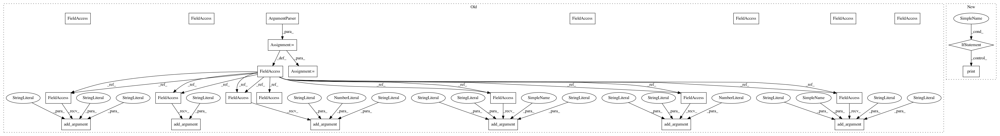

ad2ff3124948b32978b41d5b3e66630f05d0f6fe,beholder_demo.py,,,#,210
Before Change
train()
if __name__ == "__main__":
parser = argparse.ArgumentParser()
parser.add_argument("--fake_data", nargs="?", const=True, type=bool,
default=False,
help="If true, uses fake data for unit testing.")
parser.add_argument("--max_steps", type=int, default=10000,
help="Number of steps to run trainer.")
parser.add_argument("--learning_rate", type=float, default=0.001,
help="Initial learning rate")
parser.add_argument("--dropout", type=float, default=0.9,
help="Keep probability for training dropout.")
parser.add_argument(
"--data_dir",
type=str,
default="/tmp/tensorflow/mnist/input_data",
help="Directory for storing input data")
parser.add_argument(
"--log_dir",
type=str,
default="/tmp/tensorflow/mnist/logs/mnist_with_summaries",
help="Summaries log directory")
FLAGS, unparsed = parser.parse_known_args()
tf.app.run(main=main, argv=[sys.argv[0]] + unparsed)
After Change
if __name__ == "__main__":
import os
if not os.path.exists(LOG_DIRECTORY):
os.makedirs(LOG_DIRECTORY)
print(LOG_DIRECTORY)
beholder_pytorch()
In pattern: SUPERPATTERN
Frequency: 3
Non-data size: 25
Instances
Project Name: lanpa/tensorboardX
Commit Name: ad2ff3124948b32978b41d5b3e66630f05d0f6fe
Time: 2018-06-07
Author: huang.dexter@gmail.com
File Name: beholder_demo.py
Class Name:
Method Name:
Project Name: tensorflow/models
Commit Name: 22a669d6c8ebe29114c72e4cebe900d599a15201
Time: 2018-07-20
Author: ray.yuan0@gmail.com
File Name: research/a3c_blogpost/a3c_cartpole.py
Class Name:
Method Name:
Project Name: haotianteng/Chiron
Commit Name: 7645a5a90740ad0f9222620d8eda5c9a6544011c
Time: 2018-04-29
Author: neven.miculinic@gmail.com
File Name: chiron/chiron_eval.py
Class Name:
Method Name: